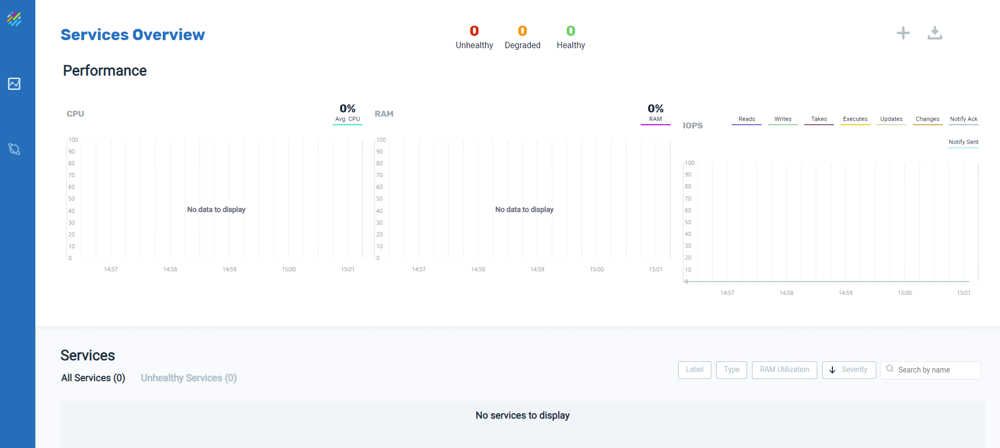
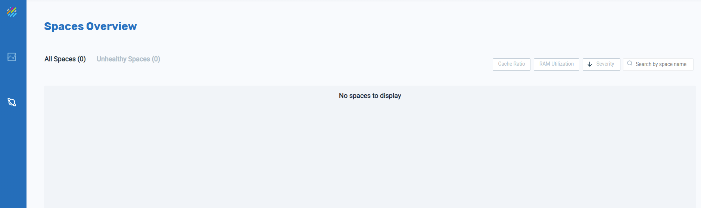

This topic is a hands/on introduction to GigaSpaces
This introduction consists of four parts:
Part 1 —
4Part 2 — Launch Ops Manager (this topic) — Run and view the GigaSpaces user interface.
Part 3 —
Part 4 —
Need assistance or further information? Don't hesitate to contact us — we're here to help!
Ops Manager is the graphical interface to the GigaSpaces environment. With it, we can import data, deploy services and
The GigaSpaces Manager controls the GigaSpaces environment and enables the Ops Manager user interface.
1. Open a command line in the bin directory of your GigaSpaces installation, and run this command:
gs.sh host run-agent --auto
gs host run-agent --auto
After a few moments, a browser window will open:
2. Change the URL to the following: http://localhost:8090
The Ops Manager window will open:


We will use this window to pull data from the PostgreSQL database into

Initially no services are running. We will revisit this screen after we deploy a service.

We will see some Space information after we deploy data from the PostgreSQL database.
In
Need assistance or further information? Don't hesitate to contact us — we're here to help!